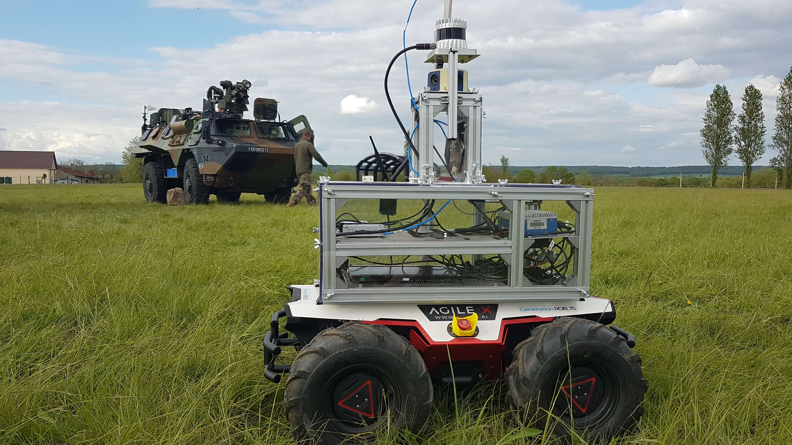
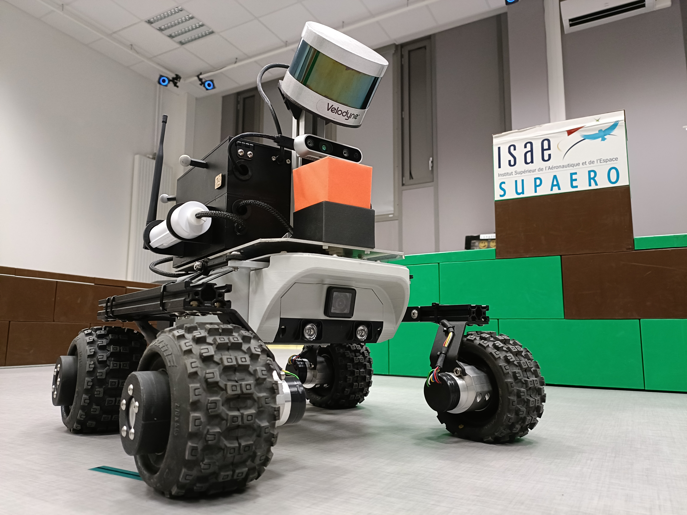
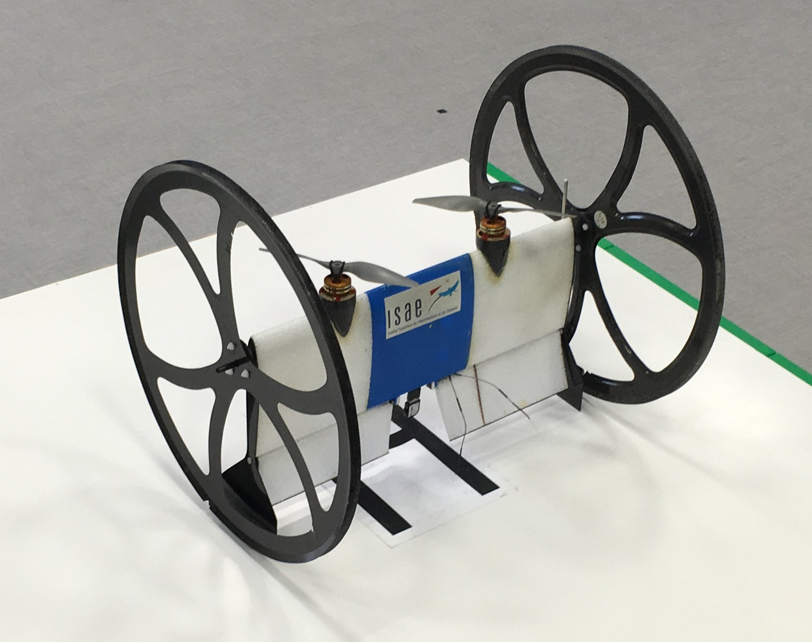
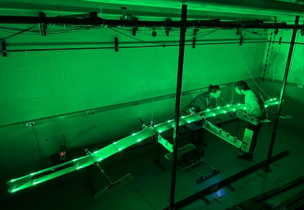
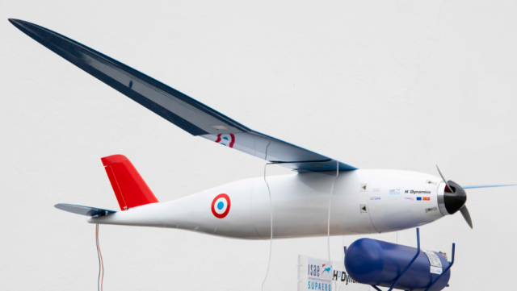
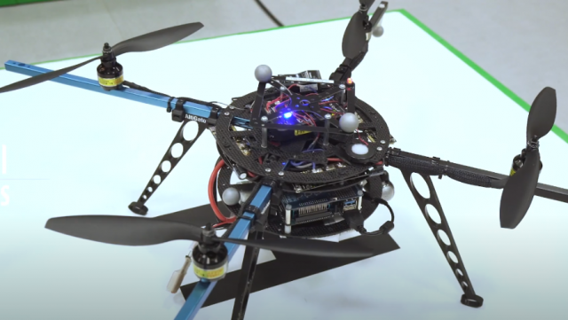
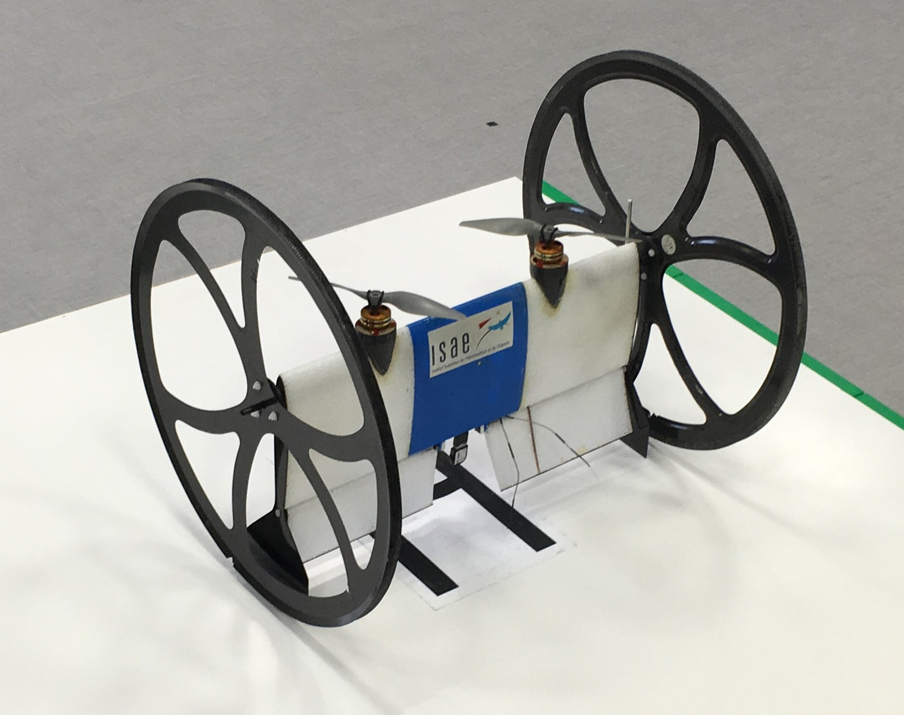
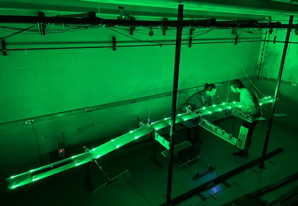
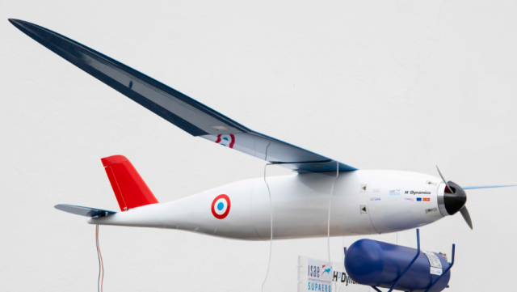
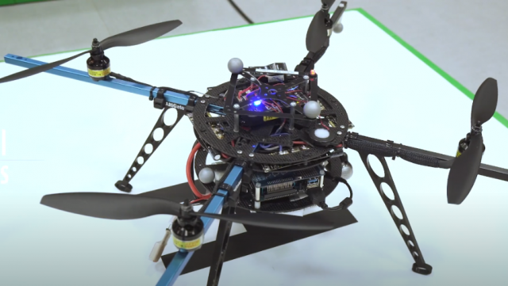

Autonomous Robotics Systems
Research Alliance
byResearch Alliance
byAre you a hardcore robotics enthusiast? We are too! Further your academic and professional development by joining us.
AURORA is a way to regroup all the ISAE researchers from the autonomous systems and robotics communities. It's also a way to share knowledge between students of all horizons.
Students from the various ISAE courses are welcome to do their research projects with us. Master students and trainees are also welcomes. Do not hesitate to openly candidate.
ISAE-SUPAERO
ISAE-SUPAERO is developing a research policy that is very much oriented towards the future needs of industry in the field of aerospace engineering or high technology. This proximity to the industrial world is also characterized by the development of a policy of sponsorship agreements in strategic areas and by the participation in teaching of many professionals who present to students the latest technological innovations and the best industrial practices. At the international level, ISAE-SUPAERO - one of the world leader aerospace engineering schools - cooperates with the best European universities (Cranfield, TU Delft, KTH Stockholm, ETSIA Madrid, TU Munich, Pisa) thanks to the Erasmus+ program, and North American (MIT, Caltech, Stanford, Berkeley...) universities.
The "Autonomous Systems" Platform gathers the various tools and means, both software and robotics, provided by the DISC technical team to the researchers of ISAE-SUPAERO. This platform is composed of an evolution area of 10 x 10 x 4 m equipped with a motion capture system, where various mobile ground or air robots can move, as well as a dozen of development and control stations. This evolution area has a modular semi-urban environment that can be modified according to the different projects or tests to be carried out. The platform is used for the development of demonstrators allowing to highlight the various research projects of the ISAE-SUPAERO researchers, as well as for teaching through practical works which are carried out initially in simulation, then on the real robots.
CORTEX is a mobile platform build on top of an Agilex Scout V2 mobile robot. It gathers the various perception means: LiDAR, Radar, Cameras, GNSS, IMU and embedeed software for various robotics applications. This robot allows research on both SLAM and Active-SLAM topics, Mapping, Planning and Control command in both indoor and outdoor environments. Is is provided by the DEOS Navires research team to the researchers of ISAE-SUPAERO.

Leo-rovers are mobile platforms mainly equipped with RGB-D camera and LiDAR. They are also instrumented with IR reflective patterns to get the Optitrack ground truth. Such platforms are mainly used for teaching activities or for demosntrating research results in indoor scenario.

We have various drones available at ISAE-SUPAERO, some are fully designed here and allow ambitious project as the deformable HALion or the Mermoz Hydrogen drone. In order : DJI commercial drone, Convertible MAVion, Deformable HALion, Mermoz Hydrogen drone, Home made system.
 







If you want to be part of the adventure, if you are a hardcore robotics enthusiast, if you want to learn and shared on hot scientific topics, then we can’t wait to welcome you onto our team!